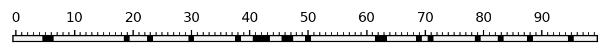
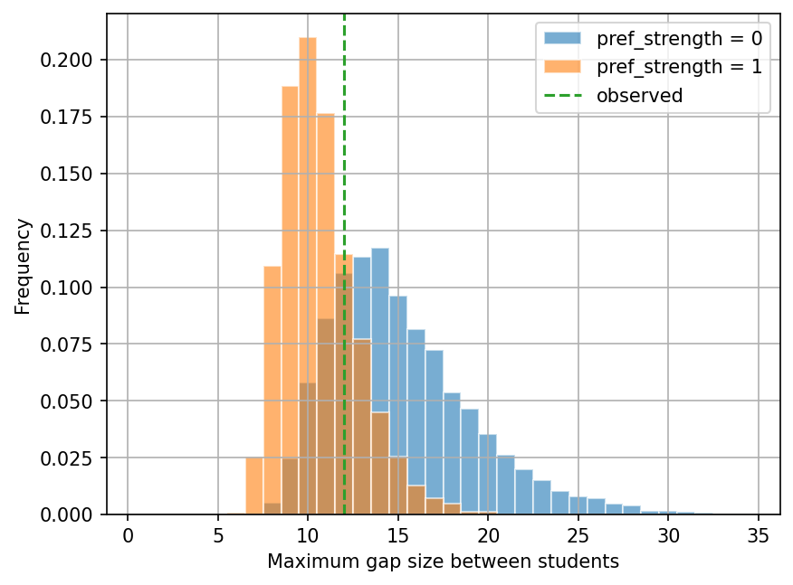
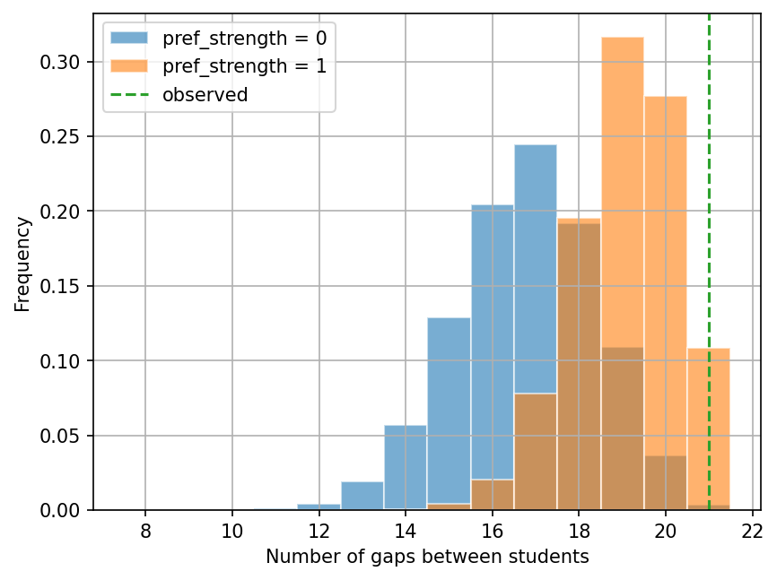

Lab 4: Maximum Likelihood Estimation#
For the class on Wednesday, January 22nd
A. Student Seating - A Maximum Likelihood Analysis#
Let’s revisit the problem presented in Part B of Lab 0. In that lab, we asked whether we can reject the hypothesis that students choose their seats uniformly at random based on an observed seating map. (Here, choosing seats uniformly at random means choosing seats without any preference.)
In this lab, we will go one step further to create a model, as an attempt to explain the observed seating map. This model will have a tunable parameter that controls the strength of preference. We will then use the maximum likelihood estimation method to estimate this parameter.
A1. Construct the Model#
Let’s construct the model first. Some of you noticed in Lab 0 that, in the observed seating map, no two students are sitting next to each other. Maybe students have a preference for not sitting next to each other.
Let’s say the probability of a student chooses a specific empty seat is proportional to \(d^s\), where the \(d\) is the distance (in length of seats) to the nearest seated student, and \(s\) is a parameter that controls the strength of preference. For example, the there are five seats and the fourth one is occupied by a student, then the value of \(d\) for each seat would be:
Seat map = E E E S E
d = 3 2 1 0 1
If \(s=0\), then this model is the same as choosing seats uniformly at random, since \(d^0=1\) regardless of the value of \(d\).
If \(s>0\), then the student is more likely to choose a seat that has larger \(d\), that is, further from other seated students.
If \(s<0\), then the student is more likely to choose a seat that has smaller \(d\), that is, closer to other seated students.
Below, the function simulate_seating_with_preferences implements this model,
with the argument pref_strength being the parameter \(s\) described above.
The functions visualize_seating and find_gaps were copied from Lab 0.
import numpy as np
from tqdm.notebook import trange
import matplotlib.pyplot as plt
rng = np.random.default_rng()
def simulate_seating_with_preferences(n_seats, n_students, pref_strength=0):
if pref_strength == 0:
return rng.choice(n_seats, n_students, replace=False)
seats = np.zeros(n_seats, dtype=np.int32)
if n_students == 0:
return np.flatnonzero(seats)
seats[rng.choice(n_seats)] = 1
if n_students == 1:
return np.flatnonzero(seats)
indices = np.arange(n_seats)[:,np.newaxis]
for _ in range(n_students-1):
spacing = np.abs(indices - np.flatnonzero(seats)).min(axis=1)
with np.errstate(divide='ignore'):
p = spacing.astype(np.float64) ** pref_strength
p[spacing == 0] = 0
p /= p.sum()
seats[rng.choice(n_seats, p=p)] = 1
return np.flatnonzero(seats)
def visualize_seating(seated, n_seats):
seats = np.zeros(n_seats, dtype=int)
seats[np.asarray(seated, dtype=int)] = 1
fig, ax = plt.subplots(dpi=200)
ax.matshow(np.atleast_2d(seats), cmap='gray_r', vmin=-0.05)
ax.set_xticks(np.arange(0, 100, 10))
ax.set_xticks(np.arange(0, 100), minor=True)
ax.tick_params('x', which="both", direction="out", bottom=False, labelsize="small")
ax.set_yticks([])
plt.show()
plt.close(fig)
def find_gaps(seated, n_seats):
seats_sorted = np.sort(np.asarray(seated, dtype=int))
gaps = np.ediff1d(np.concatenate([[-1], seats_sorted, [n_seats]])) - 1
return gaps[gaps > 0]
🚀📝 A1 Tasks & Questions:
Run the following cell with a few different values of pref_strength. Inspect the seating maps. Are they consistent with the model described above?
// Write your answer here
n_seats = 100
n_students = 20
visualize_seating(simulate_seating_with_preferences(n_seats, n_students, pref_strength=0), n_seats)

A2. Produce model predictions#
In the first cell below, we simply reproduce the observed seating map from Lab 0.
In the second cell below, we define a new function find_gap_stat_distribution.
This function runs simulate_seating_with_preferences for n_trials times,
and each time it will also collect a specific statistic of the gaps based on gap_stat_func.
For example, if you set gap_stat_func=np.max, then the function will collect the maximum gap size in each trial.
In the end you will have n_trials of the maximum gap sizes.
Note that pref_strength is also an argument of find_gap_stat_distribution,
so we can produce the needed distribution with any value of pref_strength.
In the third cell below, we use find_gap_stat_distribution to produce the distribution of the maximum gap sizes
for two cases: pref_strength=0 (uniformly at random) and pref_strength=1.
We then plot the histograms of the maximum gap sizes for these two cases in the fourth cell below.
seated_observed = [1, 6, 9, 20, 33, 37, 40, 45, 48, 51, 55, 59, 62, 65, 71, 74, 81, 85, 90, 95]
visualize_seating(seated_observed, n_seats)
gaps_observed = find_gaps(seated_observed, n_seats)
max_gap_observed = np.max(gaps_observed)
gap_count_observed = len(gaps_observed)
print("Maximum gap observed =", max_gap_observed)
print("Number of gaps observed =", gap_count_observed)

Maximum gap observed = 12
Number of gaps observed = 21
def find_gap_stat_distribution(n_seats, n_students, pref_strength, gap_stat_func, n_trials=10000):
gap_stat_dist = []
for _ in trange(n_trials):
seated = simulate_seating_with_preferences(n_seats, n_students, pref_strength)
gap_stat = gap_stat_func(find_gaps(seated, n_seats))
gap_stat_dist.append(gap_stat)
return np.array(gap_stat_dist)
max_gap_dist_no_pref = find_gap_stat_distribution(n_seats, n_students, pref_strength=0, gap_stat_func=np.max)
max_gap_dist_pref_1 = find_gap_stat_distribution(n_seats, n_students, pref_strength=1, gap_stat_func=np.max)
fig, ax = plt.subplots(dpi=150)
ax.hist(max_gap_dist_no_pref, bins=np.arange(0.5, 35), density=True, alpha=0.6, edgecolor="w", label="pref_strength = 0");
ax.hist(max_gap_dist_pref_1, bins=np.arange(0.5, 35), density=True, alpha=0.6, edgecolor="w", label="pref_strength = 1");
ax.grid(True)
ax.set_xlabel("Maximum gap size between students")
ax.set_ylabel("Frequency")
ax.axvline(max_gap_observed, ls="--", color="C2", label="observed")
ax.legend();

We will now repeat the above steps, but using the number of gaps as the statistic of interest.
We simply need to set gap_stat_func=len in the find_gap_stat_distribution function.
Also, note that it is impossible to have more than 21 gaps in the seating map!
gap_count_dist_no_pref = find_gap_stat_distribution(n_seats, n_students, pref_strength=0, gap_stat_func=len)
gap_count_dist_pref_1 = find_gap_stat_distribution(n_seats, n_students, pref_strength=1, gap_stat_func=len)
fig, ax = plt.subplots(dpi=150)
ax.hist(gap_count_dist_no_pref, bins=np.arange(7.5, 22), density=True, alpha=0.6, edgecolor="w", label="pref_strength = 0");
ax.hist(gap_count_dist_pref_1, bins=np.arange(7.5, 22), density=True, alpha=0.6, edgecolor="w", label="pref_strength = 1");
ax.grid(True)
ax.set_xlabel("Number of gaps between students")
ax.set_ylabel("Frequency")
ax.axvline(gap_count_observed, ls="--", color="C2", label="observed")
ax.legend();

📝 A2 Questions:
What did you observe from the two plots above? Specifically, explain the following features based on the model:
The maximum gap sizes tend to be smaller when
pref_strength=1(orange) than whenpref_strength=0(blue).The numbers of gaps tend to be larger when
pref_strength=1(orange) than whenpref_strength=0(blue).
Based on the first plot (maximum gap sizes), what is the probability to see a maximum gap size of 12 in the model with
pref_strength=1? And in the model withpref_strength=0? Given your answers, does the observed seating map prefer the model withpref_strength=1orpref_strength=0?Based on the first second plot (numbers of gaps), what is the probability to see 21 gaps in the model with
pref_strength=1? And in the model withpref_strength=0? Given your answers, does the observed seating map prefer the model withpref_strength=1orpref_strength=0?
// Write your answers here.
A3. Construct the Likelihood Function#
Now we are going to estimate the parameter \(s\) (or pref_strength in code) using the maximum likelihood estimation method.
Our first step is to calculate the likelihood function.
The likelihood is the probability (or probability density) of observing specific statistics of the data given the parameters. In our case, the “statistics” could be the maximum gap size or the number of gaps, the “data” are the observed seating map, and the “parameters” are \(s\) (only one parameter in this model). We can write the likelihood function as:
where \(s\) is the preference strength parameter in our model, \(D\) is the chosen statistic (e.g., maximum gap size, number of gaps), and \(D^*\) is the observed value of that statistic. If the chosen statistic has discrete values (which is the case for both maximum gap size and number of gaps), then the symbol \(p\) above represents the actual probability of \(D=D^*\). If the chosen statistic is continuously valued (which is the case for mean gap size), then the symbol \(p\) above represents the probability density in \(D\).
Note that in our model, once the value of s$ is specified, the probability distribution of the maximum gap size (or the number of gaps) is then fully determined. However, it is not easy to write down the probability distribution explicitly, and we will need to use simulations to approximate the probability distribution.
We actually already have enough information from Part A to calculate the approximated probability mass functions of the maximum gap size and the number of gaps for some values of \(s\).
📝 A3 Questions:
For these questions, find your answers using the results from Part A and code (that is, not just eyeballing the answers). Add your code (that gives the answers) to the cell below.
If \(D\) is the maximum gap size, find the approximated values of the following probabilities:
\(p(D=15 | s=0)\)
\(p(D=10 | s=1)\)
If \(D\) is the number of gaps, find the approximated values of the following probabilities:
\(p(D=10 | s=0)\)
\(p(D=18 | s=1)\)
Hint
To find how many elements in an array
aare equal to 1, you can usenp.count_nonzero(a == 1).To find the total length of a 1D array
a, you can uselen(a).
# Add your answers after the commas
print("p(maximum gap=15 | s=0) =", )
print("p(maximum gap=10 | s=1) =", )
print("p(number of gaps=10 | s=0) =", )
print("p(number of gaps=18 | s=1) =", )
A4. Maximum Likelihood Estimation#
Now we are ready to do the maximum likelihood analysis! Because calculating the likelihood function takes quite some time in this case, we will start with just a few values of \(s\) rather than doing a full optimization.
In the cell below, we will loop through a few values of \(s\), which are defined in pref_strength_values.
For each case, we will calculate the likelihood for the observed value of the chosen statistic.
Let’s start with the maximum gap size as the chosen statistic.
🚀 A4 Tasks (Part 1):
Edit the line
likelihood = 1below to the correct likelihood calculation (the likelihood is certainly not 1).
Then, the list likelihood_values will contain the likelihood values corresponding
to pref_strength_values. We can then make a plot of likelihood_values vs. pref_strength_values.
pref_strength_values = [-1, -0.5, 0, 0.5, 1]
likelihood_values = []
for pref_strength in pref_strength_values:
dist = find_gap_stat_distribution(n_seats, n_students, pref_strength=pref_strength, gap_stat_func=np.max)
likelihood = 1 # Add your code here
likelihood_values.append(likelihood)
fig, ax = plt.subplots(dpi=150)
ax.plot(pref_strength_values, likelihood_values, label="Max gap");
ax.grid(True)
ax.set_xlabel("Preference strength")
ax.set_ylabel("Likelihood")
ax.legend();
🚀 A4 Tasks (Part 2):
Make a copy of the two cells above, then change your copied cells so that they use the number of gaps as the chosen statistic.
Edit the values in
pref_strength_values(but don’t add too many as it can take very long to run) such that you can see a peak in your likelihood plot.
Tip
In this lab, don’t worry about finding the precise value of \(s\) that maximizes the likelihood. That is an optimization problem, which is not a main focus of this lab, and we will also learn some other methods to do this in the next few weeks.
The main goal here is to understand the concept of maximum likelihood estimation, and to formulate the calculation of the likelihood function based on the model and the observed statistics.
📝 A4 Questions:
Around what value of \(s\) (or
pref_strength) does the likelihood reach its maximum value when using the maximum gap size as the chosen statistic?Around what value of \(s\) (or
pref_strength) does the likelihood reach its maximum value when using the number of gaps as the chosen statistic?Do the answers of (1) and (2) agree? What conclusion can you draw thus far?
What may be your next steps in this analysis? For each “next step”, describe the goal and how you may achieve the goal. You do not have to actually implement these next steps.
// Write your answers here.
Tip
Submit your notebook
Follow these steps when you complete this lab and are ready to submit your work to Canvas:
Check that all your text answers, plots, and code are all properly displayed in this notebook.
Run the cell below.
Download the resulting HTML file
04.htmland then upload it to the corresponding assignment on Canvas.
!jupyter nbconvert --to html --embed-images 04.ipynb